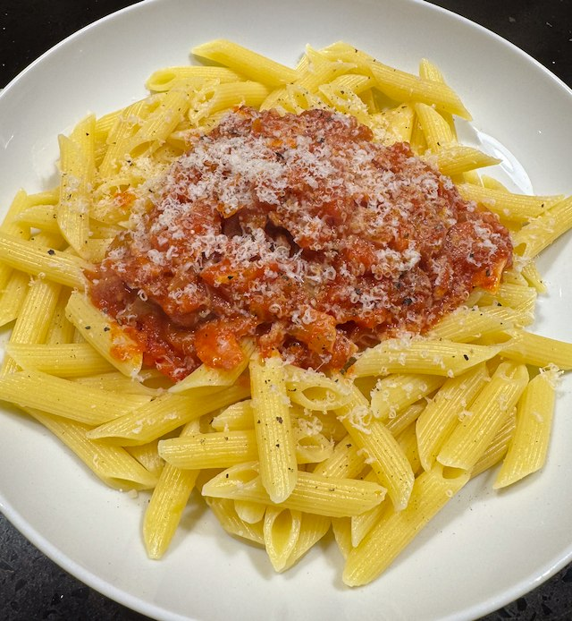

Serves: 4
Cook Time: 1 hour
Bacon and Tomato Pasta

This used to be out go to pasta recipe. It takes quite a while to cook.
Ingredients
- olive oil
- 1 pack bacon, cut in thin pieces
- 1 onion, finely chopped
- 2 garlic cloves, thinly sliced.
- 1 400g tin tomatoes, chopped
- ¼ tsp sugar
- ¼ tsp chilli flakes
- salt and pepper
- 500g short pasta
- parmesan
Method
Heat a pan to medium. Add oil and bacon and fry until crispy, about 10 min.
Turn down heat to low and add onion. Fry until translucent, about 20 min.
Add garlic and fry for 2 min.
Add tomatoes, sugar and chilli. Turn heat to medium, and cook on a slow bubble for 20 min.
Taste for salt. You may well not need any because the bacon is very salty.
Cook pasta to packet timings. I use 1.5 litre of water and 1 tbsp of salt.
Serve topped with parmesan cheese.